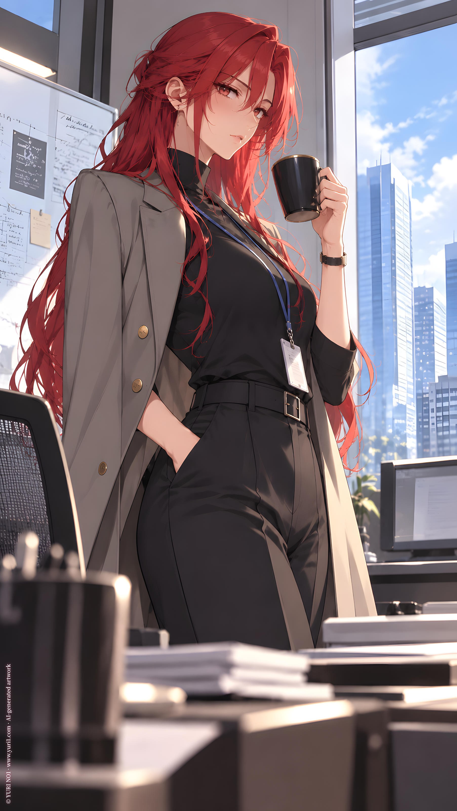

ORIGINAL TRACK ／ YURI NO1
Five Reasons
Krina · Five bottles
Lyrics · Base Script
[Verse 1]
Five bottles on the counter
Phone turned face-down by the sink
You said we're finally over
So why do I still have to think?
Red hair in the bathroom mirror
Mascara holding on somehow
I look like someone with an answer
Don't ask me for one right now
[Pre-Chorus]
Don't call
Don't knock
Don't say you changed your mind
We both know how this story goes
We've done it every time
[Chorus]
Five bottles
Five reasons not to call you
Five chances to forget
Five little glass excuses
For everything I haven't left
Five bottles
Line them up beside me
Like soldiers I don't trust
I swear tonight I'll end it
Then I drink another one because—
If I don't drink
It's worse for my health
And probably worse for everyone else
[Verse 2]
Tomorrow I'll look professional
Clean shirt, perfect reply
No one at work will ever notice
I spent the whole damn night asking why
You always liked me furious
You said I looked alive that way
Funny how you called it passion
When neither one of us could stay
[Pre-Chorus]
Don't smile
Don't tease
Don't tell me that you knew
I'd throw the door wide open
The second I saw you
[Chorus]
Five bottles
Five reasons not to call you
Five chances to forget
Five little glass excuses
For everything I haven't left
Five bottles
Line them up beside me
Like soldiers I don't trust
I swear tonight I'll end it
Then I drink another one because—
If I don't drink
It's worse for my health
And probably worse for everyone else
[Bridge]
Bottle one says, "Block her"
Bottle two says, "Sleep"
Bottle three remembers
Everything I meant to keep
Bottle four gets angry
Bottle five just laughs
And somewhere after midnight
I stop wanting you back
Maybe
[Final Chorus]
Five bottles
But tonight I leave one standing
Four is more than enough
Maybe that's not called recovering
But it's something close to us
Five bottles
Used to wait here every evening
Like a ritual I knew
Now there's one still on the counter
And for once
I'm not saving it for you
[Outro]
Phone down
Lights out
One bottle left unopened
That's enough
For now
YURI NO1 Music \ https://music.yuri1.com